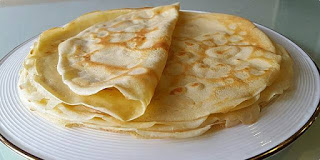
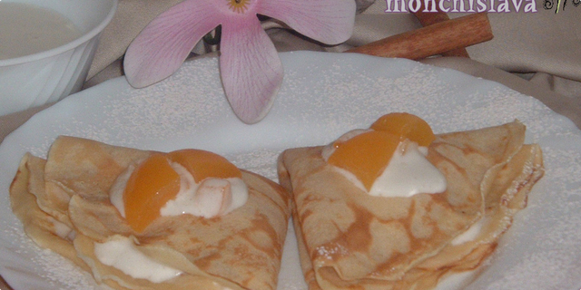
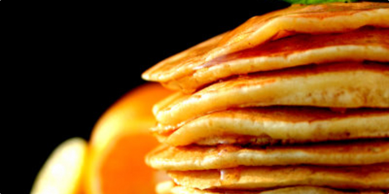

Palačinke |
|||
|---|---|---|---|
|  |  |  | |
| 2 jaja 150 g brašna 300 ml mlijeka malo soli |
2 jaja prstohvat soli 150 g brašna žličica praška za pecivo 300 ml mlijeka vrh noža cimeta Preljev: 100 g meda 1/2 naranče 1/2 limuna korice limuna, naranče, cimet |
2 jaja žlica smeđeg šećera vrećica vanilin šećera 2 dcl mlijeka 1,5 dcl vode 60 g maslaca prstohvat soli 200 g brašna 1/2 vrećice praška za pecivo korica limuna i naranče |
|
| 1. U zdjelu stavite brašno, jaja, sol i mlijeko te pjenjačom dobro izmiješajte kako biste dobili glatku smjesu. 2. Na zagrijanoj tavi za palačinke s malo masnoće ulijevajte zaimačom lijevano tijesto te ga brzim okretanjem tave rasporedite po cijeloj njezinoj površini. 3. Kada palačinka na površini promijeni boju, okrenite je pomoću palete i kratko pecite na drugoj strani. |
1. Od navedenih sastojaka umutite smjesu za palačinke i ostavite da odstoji 30-ak min. 2. Nakon što je smjesa odstajala, ispecite palačinke. Preljev: Med stavite u manji lončić, dodajte sok od polovice naranče i limuna, malo zagrijte, začinite koricom limuna, naranče i cimetom. Možete dodati i neke druge začine po želji |
1. Istucite pjenjačom žumanca s obje vrste šećera , postepeno uz miješanje dodajte mlijeko i vodu, dodajte otopljeni maslac i malo korice limuna i naranče. 2. Istucite bjelanca sa soli u čvrst snijeg. 3. Na smjesu prosijte brašno i prašak za pecivo, sve dobro umiješajte pjenjačom, te lagano umiješajte snijeg od bjelanjaka. Smjesa mora biti gusta, gušća nego za obične palačinke. 4. Premažite tavu s malo ulja. Većom žlicom uzimajte od smjese, te na tavi oblikujte manje palačinke promjera 9-10 cm. Možete odjednom peći 2 - 3 palačinke, ovisno kolika vam je tava. |
|